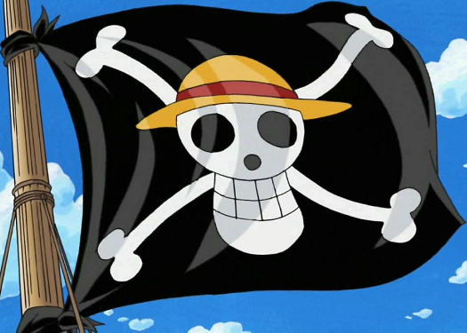
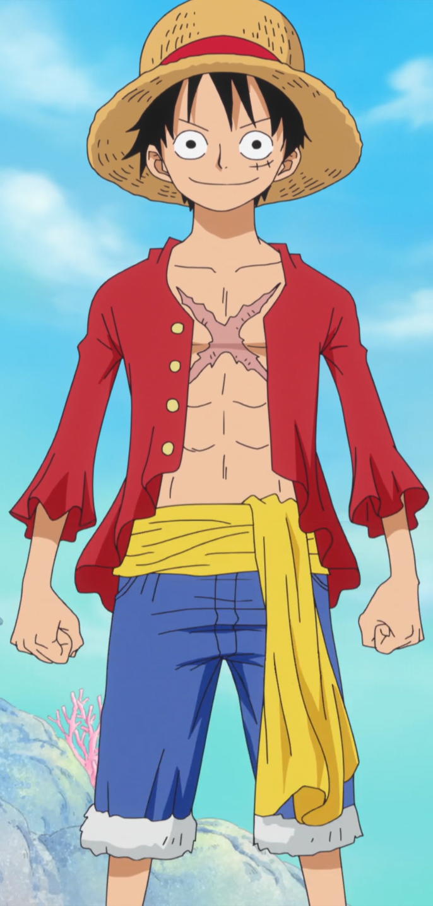
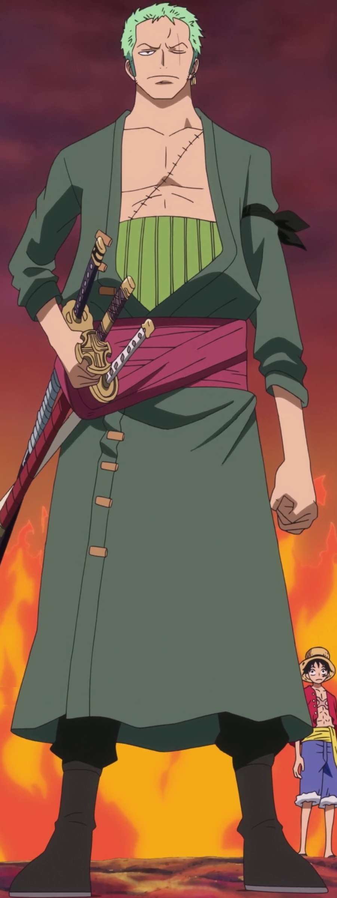
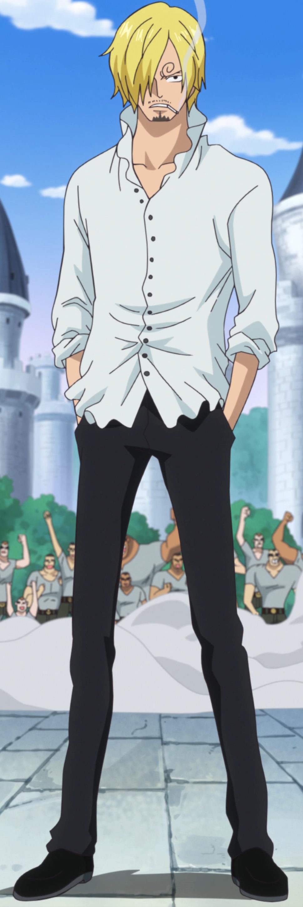
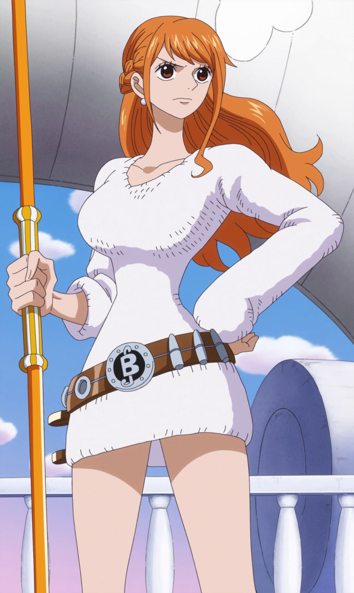
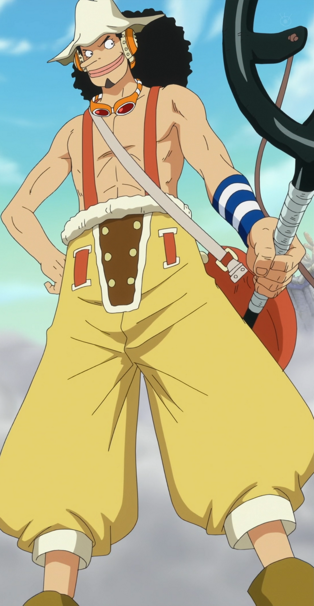
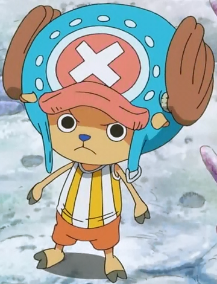
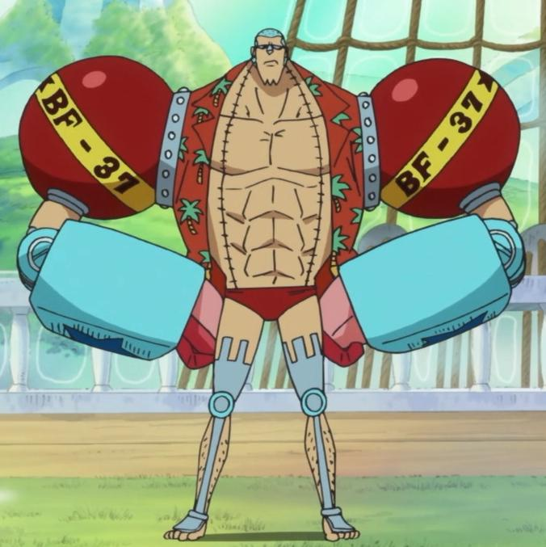
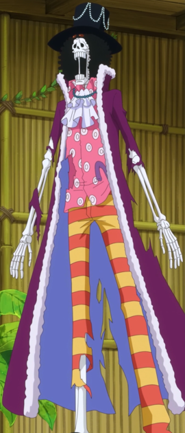
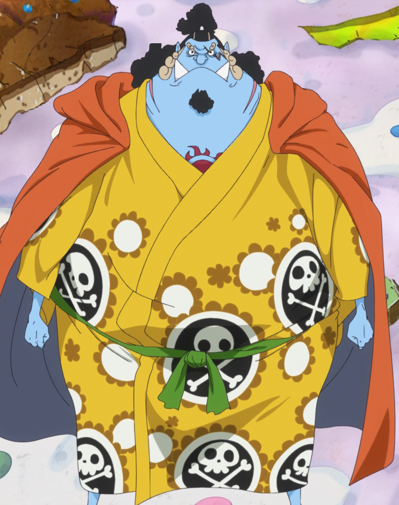

Toda la tripulación esta lista para navegar
¿Te animas tabmién?
Mugiwara
Los Piratas de Sombrero de Paja , principalmente conocidos como la Banda de Sombrero de Paja , es una banda de piratas original del East Blue, pero tiene miembros de diferentes partes del mundo. Ellos son el foco y los principales protagonistas de la trama del manga y el anime de One Piece, están capitaneados por el protagonista principal de la serie, Monkey D. Luffy. Se les conoce como los de «Sombrero de Paja», por el característico sombrero de su capitán, el cual le fue cedido por Shanks el Pelirrojo, y fueron conocidos como «Piratas de Sombrero de Paja» gracias a Smoker en Arabasta. La banda navegó en el Going Merry, su primer barco oficial, hasta el arco de Water 7. Durante el arco del regreso a Water 7, Franky e Iceburg les construyeron un nuevo barco, al que Iceburg llamó Thousand Sunny, a pesar de las proposiciones de nombres por parte de los miembros de la tripulación. Actualmente, los Piratas de Sombrero de Paja están constituidos por diez miembros cuyas recompensas suman un total de Belly3.161.000.100. Tras los eventos acaecidos en el Archipiélago Sabaody, los nueve miembros fueron separados unos de otros. Durante dos años todos entrenaron en sus relativos destinos en los que cayeron tras la separación, llegando a ser más poderosos para ayudarse los unos a los otros. Pasado el tiempo se reunieron de nuevo y desde entonces se han convertido en un gran poder activo en el Nuevo Mundo, agregando además a la tripulación a un antiguo miembro de los Siete Guerreros del Mar, Jinbe. Incluso han logrado tomar posesión de una de las armas vivientes de Big Mom, Zeus, quien es ahora un siervo incondicional de Nami y una nueva arma para la tripulación.
Monkey D. Luffy
Monkey D. Luffy, más conocido como Luffy "Sombrero de Paja", es el protagonista principal de la serie de manga y anime One Piece. Comió una fruta del diablo de tipo paramecia llamada fruta Gomu Gomu, que le convirtió en un hombre de goma. Además de esto, posee varias habilidades que le hacen ser un pirata más que especial; un gran ejemplo de ello es la capacidad de usar el haoshoku haki ―que sólo lo posee una persona dentro de un millón― y poseer también los otros dos tipos de haki.
Ronoroa Zoro
Roronoa Zoro,conocido como El Cazador de Piratas Kaizoku Gari?), es el combatiente de los Piratas de Sombrero de Paja, y uno de sus dos espadachines, así como un antiguo cazarrecompensas. Fue el primer miembro en unirse a la tripulación, y es considerado parte del Trío Monstruoso junto a Luffy y Sanji. Su sueño es convertirse en el mejor espadachín del mundo. Zoro también es considerado uno de los Once Supernovas que forman parte de «la peor generación», ya que llego al Archipiélago Sabaody con Belly120.000.000 de recompensa. Posee una recompensa de Belly320.000.000, siendo la cuarta más alta de la tripulación, después de las de Luffy, Jinbe y Sanji.
Sanji
Sanji, conocido como Pierna Negra y nacido como Vinsmoke Sanji, es el cocinero de los Piratas de Sombrero de Paja, el tercer hijo de la familia Vinsmoke y uno de los protagonistas principales del manga y anime de One Piece. Es el quinto miembro de la tripulación, y el cuarto en unirse. Al haber nacido en el North Blue, fue el primer tripulante en no ser originario del East Blue. Forma parte del «Trío Monstruoso» junto a Luffy y Roronoa Zoro; y, como tal, es uno de los combatientes más fuertes de la tripulación. Su sueño es encontrar el mar legendario conocido como All Blue, el cual, según la leyenda, es el único hábitat marino del mundo donde coinciden todas las especies de peces que existen, confluyendo además otros seres marinos procedentes de los cinco mares. Tras los incidentes en los territorios de la emperatriz pirata Big Mom su recompensa ascendió hasta los Belly330.000.000 siendo así la tercera mas alta de los de Sombrero de paja, superada solo por el timonel Jinbe y el capitán Luffy.
Nami
Nami, apodada Gata Ladrona, es una pirata y la navegante de los Piratas del Sombrero de Paja, así como una de las protagonistas principales de la serie. Es el tercer miembro de la tripulación y la segunda en unirse, haciéndolo oficialmente durante el arco de Arlong Park. Ella era anteriormente un miembro de los Piratas de Arlong e inicialmente se unió a los de Sombrero de Paja con el fin de robarles, pero se unió oficialmente tras rebelarse contra Arlong y su posterior derrota a manos de Luffy. Actualmente posee una recompensa de Belly66.000.000.
Usopp
Usopp es el francotirador de los Piratas de Sombrero de Paja. Es el cuarto miembro de la tripulación y el tercero en unirse oficialmente. A pesar de abandonar la banda en el arco de Water 7, se volvió a unir en el arco del regreso a Water 7. Es proveniente de la villa Syrup en el East Blue. Ahí ejerció como capitán de los Piratas de Usopp, pero tras los eventos del arco de Villa Syrup, se unió a los Sombrero de Paja. Su sueño es convertirse en un valiente guerrero de los mares como su padre. Su recompensa actual es de Belly200.000.000.
Tony Tony Chopper
Tony Tony Chopper es el médico de los Piratas de Sombrero de Paja. Es un reno que comió la fruta Hito Hito de la isla de Drum. Él es el sexto miembro de la tripulación y el quinto en unirse a ella.
Franky
Franky cuyo verdadero nombre es Cutty Flam, es un cyborg (mitad androide, mitad humano) quien era el líder de la Familia Franky, un grupo de desmanteladores de Water 7 que hacen a la vez el trabajo de cazadores de recompensas. Tras los eventos de Dressrosa cuenta con una recompensa de Belly 94.000.000. Es el octavo miembro de la tripulación de Luffy, tomando el puesto de carpintero. Franky nació en el South Blue. Su sueño es construir una nave que sea capaz de viajar por todo el mundo. Ya construyó esta nave, el Thousand Sunny, y ahora debe verificar que navegue por todo el mundo (como alguna vez lo hizo el Oro Jackson, el barco de Gol D. Roger) y vigilar sus fallos y repararlos.
Nico Robin
Nico Robin, también conocida por sus epítetos: Niña Demonio y La Luz de la Revolución es la arqueóloga de los Piratas de Sombrero de Paja. Es el séptimo miembro de la tripulación y el sexto en unirse, haciéndolo al final del arco de Arabasta. Dejó temporalmente a la tripulación durante el arco de Water 7, pero se reincorporó durante el arco de Enies Lobby. Su sueño es conocer la verdadera historia investigando en los poneglyphs. Actualmente ofrecen una recompensa de Belly130.000.000 por su cabeza, siendo la sexta más alta de toda su tripulación. Es la única superviviente del Clan de Ohara, sucediendo a todos sus predecesores como arqueóloga, y fue la mano derecha del jefe de la organización criminal Baroque Works bajo el alias de Miss All Sunday. También consumió la fruta Hana Hana.


Brook
Brook es el músico de los Piratas de Sombrero de Paja, y uno de sus dos espadachines. Es un esqueleto viviente que encontraron en un barco fantasma solo, porque habían envenenado a toda su anterior tripulación. Es el consumidor de una fruta del diablo, más concretamente la fruta Yomi Yomi, y ahora es un no-muerto traído de vuelta al mundo de los vivos como un pseudo-inmortal, debido a sus poderes. Es el noveno miembro de la banda y el octavo en aceptar unirse a la banda de Luffy, quien llevaba esperando ansiosamente un músico en su tripulación desde el comienzo de su aventura. Al principio de su historia como pirata formó parte de los Piratas Rumbar, llegando incluso a ser seleccionado como capitán por parte de lo que quedaba de la tripulación original después de que el anterior portador de ese cargo cayese enfermo junto a otros tripulantes. Brook es particularmente el más cercano a Laboon y carga consigo la última canción que compartió con su antigua tripulación, grabada en un Tone Dial, antes de que todos murieran, para ser entregada a la ballena que consideraban parte de la misma banda pirata. Antes de eso, fue el líder de un convoy de batalla en una isla, hasta el momento, desconocida.
Jinbe
Jinbe el Caballero del Mar es el timonel de los Piratas de Sombrero de Paja, siendo el décimo miembro de la banda y el noveno en unirse. Es un gyojin tiburón ballena, que sirvió como antiguo capitán de los Piratas del Sol y como miembro de los Siete Guerreros del Mar. Su nombre fue mencionado por primera vez por Yosaku cuando explicó el sistema de los Siete Guerreros del Mar. Sin embargo, fue introducido mucho más tarde en el arco de Impel Down. Renunció a su título como uno de los Siete Guerreros del Mar en la Batalla de Marineford, aliándose a los Piratas de Barbablanca. Durante la guerra formó una amistad con Monkey D. Luffy, y más tarde se alió con él para evitar el golpe de estado de los Nuevos Piratas Gyojin a la familia Neptune y al Reino de Ryugu. Incluso fue invitado a unirse a los Piratas de Sombrero de Paja, pero declinó debido a que aún estaba afiliado a Big Mom; sin embargo, afirmó que una vez termine sus asuntos pendientes él aceptaría y se uniría a la tripulación. Tras los hechos ocurridos en Whole Cake Island y finalizar sus cabos sueltos, Jinbe se rebeló contra la tripulación de Linlin y decidió ayudar a los de Sombrero de Paja a escapar de sus garras. Formó parte de una alianza con el equipo de recuperación de Sanji y los Piratas Fire Tank con el objetivo de asesinar a Big Mom, abandonando oficialmente su tripulación durante la boda fallida de Sanji y Charlotte Pudding. Su primera recompensa fue de Belly76.000.000. Con el tiempo, tras convertirse en el capitán de los Piratas del Sol, su recompensa se elevó a Belly250.000.000. Tras abandonar su puesto como uno de los Los Siete Guerreros del Mar, su recompensa subió nuevamente a Belly438.000.000.
